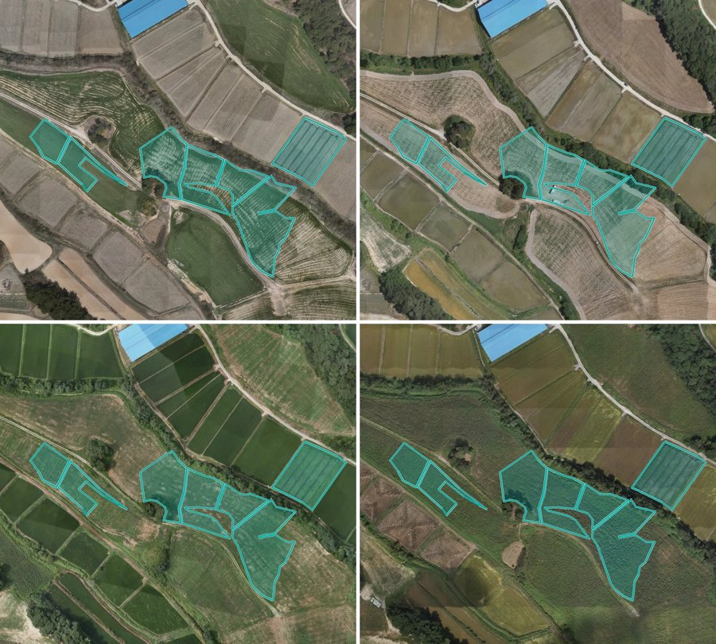
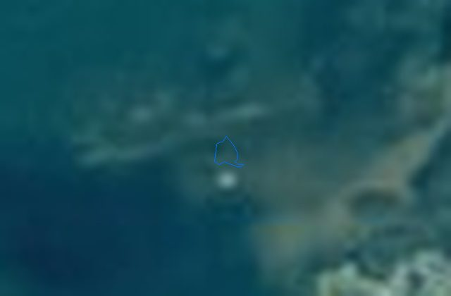

내 프로젝트
전체 보기 4건축물 2026원주시→ 시범 1곳 · 결과 확인 0/20
6서비스 관리주차장 2026여주시 외 1곳→ 시범 2곳 · 결과 확인 0/20
6서비스 관리곤포사일리지 2026보령시→ 시범 1곳 · 결과 확인 0/20
6서비스 관리
운영남원시 외 5곳
영농관리 행정서비스
기관 신고 106(6곳 합) · 재학습 필요

운영여수시
해양쓰레기 실태조사 서비스
 시범
시범증평군 외 2곳
비닐하우스 서비스
 시범
시범남원시
국토 변화 탐지 서비스
살펴볼 것 재학습 필요 3영상 없는 지역 4곳
1칸 이름이 왼쪽 메뉴와 같은 말이 되고, 오른쪽 '→' 도 같은 메뉴로 갑니다
요청함
전체0검토 요청
0분석 의뢰
0내 결재
바로 분석하기
카드 고르기시군구 검색분석하기
최근 활동
12:01
건축물 천안시 서북구 결과 갱신
어제 20:57
모델 학습 끝남
어제 20:16
건축물 원주시 결과 갱신